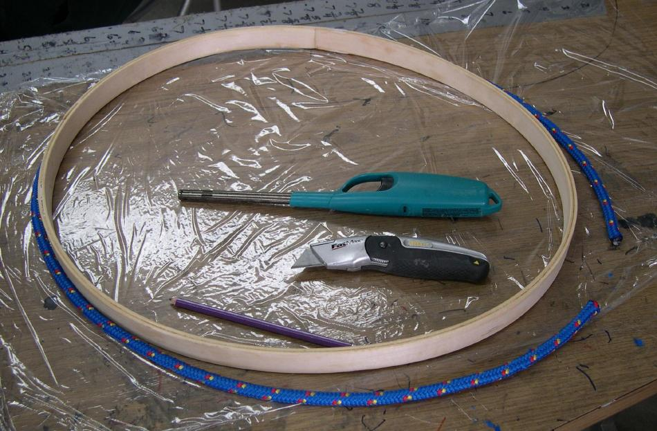

| Wood / Freestanding Coaming (4 of 8) | Menu Last Page Next Page |
|
 After the coaming assumes it's new shape in a couple of days, the woven polyester rope lip ( 1/2" or 5/8") is attached. The lip is first cut to the correct length and the ends seared to prevent fraying. |
|